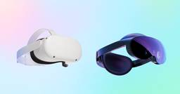
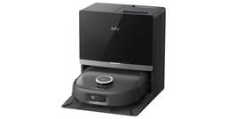

ギズモード・ジャパン
https://www.gizmodo.jp
日本最大のテクノロジー＆ガジェット専門メディア。YouTubeや記事を通じて、最新ガジェットの偏愛レビューから、AI／サイエンスの深掘りコンテンツまで幅広く発信しています。「みんなで探求する」を合言葉に、刺激的な未来の体験をシェアします。
フィード
地球温暖化で魚が北上？ 日本沿岸のDNA調査で126種が従来より北で見つかった
ギズモード・ジャパン
日本沿岸の海水から環境DNAを調査した結果、126種の魚が従来の分布より北で検出されました。地球温暖化による魚の北上や生息域の変化について最新の研究データから分かりやすく解説します。
25分前
OpenAIの最新「バグ探しAI」が強力すぎる。Firefoxの未知の弱点81件を発見
ギズモード・ジャパン
OpenAIの最新AI「GPT-6 Cyber」がFirefoxの未知の脆弱性81件を発見。サイバーセキュリティの現状と悪用リスクを防ぐ限定提供の仕組みを解説します。
2時間前
回転しながら空中を飛び回る爆速ヘビ。スローで見たら割と理にかなってた
ギズモード・ジャパン
地球上には、まだ僕の知らないヘンテコな生物がいっぱいいるみたいです。たとえば体を大きく回しながら、猛スピードで転がって逃げる爆速ヘビ。東南アジアにすむ小型のハダカメヘビです。しかも、転がるときの最高速度は、普通にはって進むときと比べ、平均で…
4時間前
唯一無二、キャラ立ち最高。職人技が随所に光る、国産腕時計のマイクロブランド
ギズモード・ジャパン
工芸的なスイスの機械式時計に対し、クォーツとともに進化した日本の腕時計は実用的なイメージがありますが、ここ数年、その傾向が変りつつあります。工芸的な機械式時計を手掛ける国産マイクロブランドが、続々と登場してきているのです。東京・大塚発のイン…
5時間前
Googleのデータセンター予定地、OK出す前に森がごっそり消えた。警察が捜査はじめる
ギズモード・ジャパン
森が、なくなってました。広さは330ヘクタール、東京ドーム約70個ぶん。場所はフィンランド北部の町、ムホス（Muhos）。Googleがデータセンターを建てる予定の土地でした。まずは衛星写真をどうぞ。こちらが2025年10月3日のもの。そし…
5時間前
AIのせいで、人間であることの証明がどんどん面倒に…。きっかけは83万件の幽霊学生
ギズモード・ジャパン
AIで課題を書く学生を叱ってたら、学生ごと偽物だった。そんな話が、アメリカから届きました。司法省が10月29日に発表した「Operation Ghostbusters（ゴーストバスターズ作戦）」です。盗んだ個人情報で架空の学生を大学に入学さ…
6時間前
コーヒーは食べる時代に。食感と風味が楽しい新感覚のお菓子 #SCAJ
ギズモード・ジャパン
コーヒーは飲むだけじゃない！先月開催されたコーヒーの祭典『SCAJ』の会場で人だかりになっていたのは、コーヒーを食べて味わえるという「モカブル」。飲むコーヒーは抽出した後の豆カスは捨ててしまいますが、こちらはコーヒー豆ごと使うのだとか。これ…
6時間前
ごちゃつくデスクが約4,000円でスッキリ。全部ここ（モニタ裏）にぶち込んじゃえ！ 1
1
ギズモード・ジャパン
ごちゃつくデスク周りを約4000円でスッキリ解決。モニター裏のVESA穴を活用してハブやケーブルなどを立体収納できる便利アイテムを紹介します。
8時間前
山崎実業のNY発ブランド「APTO」の木製マグネットで、冷蔵庫の生活感＆貼りっぱなしが減った 2
ギズモード・ジャパン
アンザイ サヤ 都内の賃貸マンションで夫と暮らし、小売の仕事とライター業を掛け持ちしています。仕事や好きなことに時間を使いたいから、家事はラクに、でも丁寧に。小さな不便を感じたら、モノを足すだけでなく、置き場所や動線も見直します。頑張らなく...
8時間前
新型iMac、さっそく使ってみて気づいた。変わらないのは完成している証拠だ、と
ギズモード・ジャパン
M6チップを搭載した新しいiMacのレビュー記事。ディスプレイや周辺機器がすべて揃った完成されたパッケージの魅力と、抜群のコスパを解説します。
10時間前

MetaのQuest 2とQuest Pro、2027年春で新機能の開発終了へ。買ったゲームはどうなる？
ギズモード・ジャパン
MetaのQuest 2とQuest Proが2027年春で新機能の開発を終了へ。購入したゲームの扱いや今後のサポート予定について詳しく解説します。
11時間前
手首も心も軽くなる。スマウォが主流のいま、毎日装着したくなる腕時計
ギズモード・ジャパン
2026年2月26日の記事を編集して再掲載しています。筆者はゴツくて多少なら雑に扱えるほどタフな「G-SHOCK」を10年以上使っています。がしかし、冬は長袖を着用するため、袖口がG-SHOCKに干渉……。G-SHOCKを袖口に被そうにも、…
11時間前
アプリを動かすSiri、ついに始動。Siri AIがすべての開発者に開放
ギズモード・ジャパン
AppleがSiri AIとサードパーティアプリの連携を全開発者に向けて開放。日本語対応のSiriがアプリ内操作を代行し、来春以降の実装に向けてプレビュー版の配信が開始されました。
12時間前
新iPad miniのナノ・テクスチャー・ディスプレイ、どこでもコンテンツに集中できるって最高だ 1
ギズモード・ジャパン
新iPad miniのナノテクスチャーディスプレイを徹底検証。屋内や屋外の明るい場所での映り込みや反射を大幅に抑え、いつでもコンテンツに集中できる快適な視認性とその価値をご紹介します。
15時間前
ボトルキャップ2個で完成するミニケース。100円玉なら17枚も入ります
ギズモード・ジャパン
2026年2月25日の記事を編集して再掲載しています。飲み終わったペットボトルのキャップって、どうしていますか？ 今まで何も考えずに捨てていましたが、「cappy（キャッピー）」（税込1,650円）に出会ってから、ちょっとキャップを見る目が…
1日前
100kgの破片が落下する可能性も。NASA観測衛星「スウィフト」、地球のどこに落ちる？
ギズモード・ジャパン
100kgもの破片が落ちてくる可能性も。NASAの観測衛星「ニール・ゲーレルス・スウィフト」は、22年間にも及ぶ長い任務を終えて、米国時間2026年11月4日早朝に大気圏へ再突入しました。重さ約1.5トンの衛星は大気を通過する際、炎につつま…
1日前

お手入れの手間も吸ってくれる。Ankerのロボット掃除機がサイクロン載せてきた！
ギズモード・ジャパン
Ankerのサイクロン式ロボット掃除機を徹底解説。高い吸引力とお手入れのしやすさを両立した最新モデルの魅力や初回セールの詳細を紹介します。
1日前
合格です。MacBook PROLEDのタッチ操作をWindowsユーザーがチェック
ギズモード・ジャパン
WindowsユーザーがMacBook PROLEDのタッチ操作を徹底レビュー。スマホ感覚で使える快適さや独自の操作感を分かりやすく解説します。
1日前
iPhone Duoと新型iPad mini、実機で比較してみた。どっちを選ぶと幸せになれるだろう？
ギズモード・ジャパン
iPhone Duoと新型iPad miniを実機で徹底比較。重さやディスプレイ、スピーカーの違いから、あなたに最適なモデル選びのヒントをご紹介します。
1日前
深夜の品出し、代わってほしい。ロボット6台をコンビニで24時間働かせてみるテスト
ギズモード・ジャパン
無人コンビニの進化系！中国でロボット開発を手掛けるAGIBOT（智元機器人）が、上海のコンビニに人型ロボット「G2」を6台送り込み、11月2日の朝10時から翌朝10時までの勤務を生配信しました。題して「Robots Never Clock …
1日前